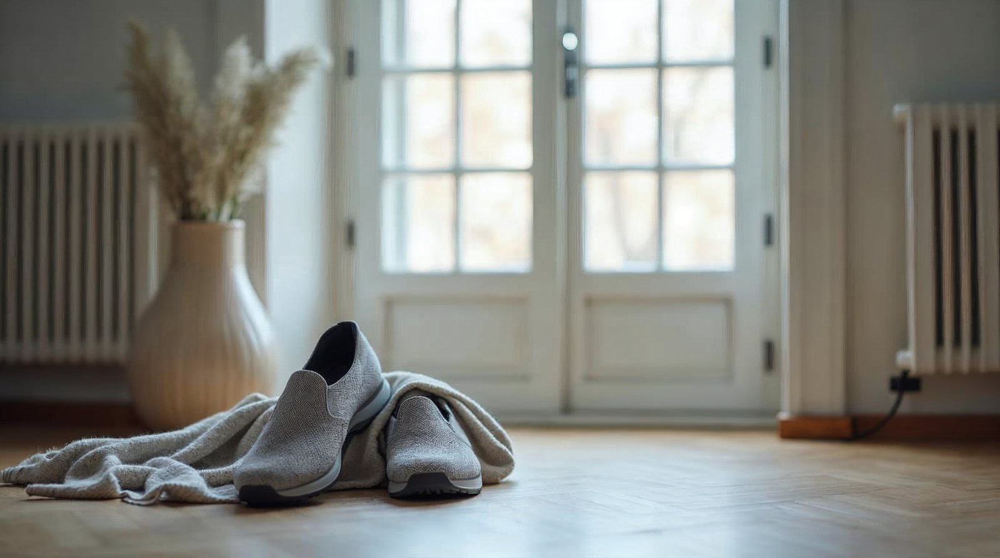
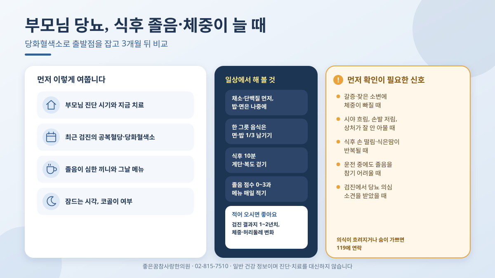

이종호 한의사 감수좋은꿈참사랑한의원 대표원장 (한의사 면허번호 19769)발행 2026-11-25 · 수정 2026-11-25
이 글의 차례
부모님 가운데 당뇨를 앓는 분이 계신데, 날이 추워진 뒤 점심만 먹으면 오후 내내 눈꺼풀이 무겁고 몇 주 사이 체중이 2~3kg 늘었다면 '혹시 나도?' 하는 생각이 드는 것이 자연스럽습니다. 식후 졸음은 겨울철 따뜻한 실내, 줄어든 활동량, 탄수화물이 많은 한 그릇 음식, 부족한 잠만으로도 생길 수 있어 그것만으로 혈당 문제라고 단정할 수는 없습니다.
다만 가족력이 있는 상태에서 체중 증가까지 겹쳤다면 막연히 걱정하기보다 숫자로 출발점을 잡아 두는 편이 마음도 편하고 생활을 바꾸기도 쉽습니다. 먼저 가장 최근 건강검진 결과지에서 공복혈당과 당화혈색소를 찾아보고, 검사한 지 1년이 넘었거나 당화혈색소 항목이 없었다면 지금 한 번 확인해 두는 것을 권합니다.
당화혈색소는 지난 2~3개월의 평균 혈당을 반영하므로, 생활을 바꾸기 시작하는 시점에 한 번, 그리고 3개월쯤 뒤에 한 번 재면 겨울 동안의 변화를 비교하기 좋습니다. 갈증과 잦은 소변, 이유 없는 체중 감소가 함께 있다면 기다리지 말고 진료부터 받으세요.
왜 가족력이 있으면 겨울의 식후 졸음과 체중 변화를 더 눈여겨볼까요
- 부모나 형제 가운데 2형 당뇨가 있는 사람은 혈당이 오르기 쉬운 체질과 함께 식습관도 비슷하게 이어받는 경우가 많습니다. 같은 집에서 자라며 익숙해진 짜고 단 반찬, 밥을 많이 담는 습관, 저녁을 늦게 먹는 생활 리듬이 지금의 하루에도 남아 있기 쉽습니다.
- 겨울에는 바깥 활동이 줄고 걸음 수가 크게 떨어집니다. 근육은 혈당을 쓰는 가장 큰 곳이라, 덜 움직이면 같은 식사를 해도 식후 혈당이 더 오래 높게 머무를 수 있습니다.
- 칼국수, 국밥, 떡국, 수제비처럼 따뜻한 한 그릇 음식은 탄수화물이 많고 빨리 먹게 됩니다. 혈당이 빠르게 올랐다가 떨어지는 폭이 크면 식후 1~2시간 사이에 졸음과 나른함을 더 크게 느끼는 분이 있습니다.
- 난방이 잘 된 사무실과 집에서 오래 앉아 있으면 몸이 늘어지고, 해가 짧아져 낮에 햇빛을 덜 보면 낮 동안 깨어 있는 힘도 떨어지기 쉽습니다.
- 연말 모임과 야근으로 잠이 줄면 다음 날 단 음식과 간식이 당기고, 잠 부족 자체가 혈당 조절에 부담이 될 수 있습니다.
- 체중이 늘 때 배 쪽에 지방이 먼저 붙으면 인슐린이 잘 듣지 않는 상태로 이어지기 쉽습니다. 가족력이 있는 분에게는 이 변화가 더 빨리 수치로 드러나기도 합니다.
- 추위를 유난히 타고 체중이 늘며 졸린 느낌이 함께 온다면 혈당뿐 아니라 갑상선 기능이 떨어진 경우도 있어, 다른 검사가 필요할 수 있습니다.
- 한의학에서는 기름지고 단 음식을 즐기고 덜 움직일 때 몸에 습담이 쌓여 몸이 무겁고 식후에 늘어지는 모습으로 보기도 하고, 비위의 기운이 약해 먹은 것을 잘 돌리지 못할 때 식곤증이 심해진다고 설명하기도 합니다.
먼저 이렇게 여쭙니다
- 부모님 중 어느 분이, 대략 언제쯤 당뇨 진단을 받으셨는지, 지금 약이나 인슐린을 쓰고 계신지 여쭙니다.
- 가장 최근 건강검진이 언제였는지, 공복혈당과 당화혈색소 숫자를 기억하시는지 여쭙니다.
- 식후 졸음이 점심 뒤에 심한지 저녁 뒤에 심한지, 먹고 나서 몇 분쯤 지나 시작되어 얼마나 이어지는지 여쭙니다.
- 졸음이 심했던 날의 메뉴와 먹는 속도, 밥이나 면의 양을 여쭙니다.
- 언제부터 체중이 늘었는지, 바지 허리가 끼기 시작했는지, 몇 kg쯤 달라졌는지 여쭙니다.
- 하루 걷는 시간과 출퇴근 방법, 겨울 들어 그만둔 운동이 있는지 여쭙니다.
- 잠드는 시각과 일어나는 시각, 코골이나 자다가 숨이 멎는다는 말을 들은 적이 있는지 여쭙니다.
- 갈증, 잦은 소변, 시야 흐림, 손발 저림이 있는지, 추위를 유난히 타는지도 함께 여쭙니다.

일상에서 먼저 해 볼 수 있는 것
이번 주: 출발점 숫자 찾기
- 최근 1~2년 검진 결과지를 꺼내 공복혈당, 당화혈색소, 중성지방, 허리둘레, 체중을 한 줄로 적습니다.
- 당화혈색소 항목이 없거나 검사한 지 1년이 넘었다면, 이번 달 안에 한 번 확인할 날을 달력에 적어 둡니다. 생활을 바꾸기 시작하는 시점의 숫자가 있어야 3개월 뒤 비교가 됩니다.
- 부모님이 언제쯤, 어떤 수치로 진단을 받으셨는지 가족에게 물어 적어 둡니다. 가족력 정보가 구체적일수록 상담이 쉬워집니다.
가장 졸린 끼니 하나부터 바꾸기
- 졸음이 가장 심한 끼니 하나만 정해 그 끼니부터 바꿉니다. 직장인은 대개 점심, 재택근무하는 분은 늦은 아침 겸 점심인 경우가 많습니다.
- 국밥이나 칼국수 같은 한 그릇 음식을 먹는 날에는 면이나 밥을 3분의 1쯤 남기고, 국물은 반 이상 남깁니다. 함께 나온 김치와 나물을 먼저 먹고 면이나 밥을 나중에 먹습니다.
- 백반을 먹을 때는 채소 반찬, 두부나 생선, 고기 같은 단백질 반찬을 먼저 몇 젓가락 먹은 뒤 밥을 먹습니다. 같은 양이라도 순서만 바꿔도 식후 혈당이 덜 가파르게 오를 수 있습니다.
- 한 끼에 20분 이상 들여 천천히 씹습니다. 숟가락을 내려놓는 시간을 일부러 만들면 속도가 줄어듭니다.
- 식사 뒤 달달한 믹스커피나 디저트를 바로 먹는 습관이 있다면 따뜻한 보리차나 물로 바꿉니다.
식후 10분 움직이기
- 점심 뒤 바로 자리에 앉지 말고 10분 정도 걷습니다. 추운 날에는 건물 안 계단을 두세 층 천천히 오르내리거나 복도를 왕복해도 됩니다.
- 재택근무라면 설거지를 서서 하고, 거실을 천천히 걸으며 통화를 합니다.
- 식후 혈당은 먹고 30분에서 1시간 사이에 가장 높아지는 경우가 많아, 이 시간에 다리 근육을 쓰는 것이 도움이 될 수 있습니다.
오후 졸음 다루기
- 오후 2~3시에 졸음이 몰려오면 단 간식을 찾기보다 찬물로 손을 씻고 창가에서 2~3분 바깥 빛을 보거나, 자리에서 일어나 어깨와 종아리를 풉니다.
- 낮잠이 꼭 필요하면 20분 안으로 짧게 자고, 오후 3시 이후에는 피합니다.
- 간식은 오후 4시 전후 한 번으로 시간을 정하고, 견과 한 줌이나 삶은 달걀, 무가당 요구르트처럼 단백질이 있는 것으로 고릅니다.
잠과 기록
- 잠드는 시각을 주말에도 크게 바꾸지 않고 7시간 안팎을 목표로 합니다.
- 체중은 일주일에 두 번, 아침 화장실 다녀온 뒤 같은 조건으로 잽니다. 허리둘레는 한 달에 한 번 배꼽 높이에서 잽니다.
- 식후 졸음을 0(없음)부터 3(참기 어려움)까지 점수로 매일 적고, 그날 메뉴를 한 줄 함께 적습니다. 2주만 모아도 어떤 메뉴에서 졸음이 심했는지 보입니다.
당화혈색소는 언제, 어떻게 확인할까요
- 당화혈색소는 적혈구 속 혈색소에 포도당이 얼마나 붙어 있는지를 보는 검사로, 지난 2~3개월의 평균 혈당 흐름을 반영합니다. 그날 아침 식사의 영향을 크게 받지 않아 공복혈당과 함께 보면 흐름을 이해하기 좋습니다.
- 흔히 5.7% 미만을 정상, 5.7~6.4%를 당뇨 전단계, 6.5% 이상을 당뇨로 진단할 수 있는 범위로 봅니다. 다만 진단은 반복 검사와 다른 결과를 함께 보고 의사가 내리는 것이어서, 한 번의 숫자로 혼자 판단하지 않습니다.
- 가족력이 있고 체중이 늘었다면, 생활을 바꾸기 전 출발점으로 한 번, 3개월쯤 뒤 한 번 재어 비교하는 방법이 무난합니다. 병원이나 검진 기관에서 정해 준 간격이 있다면 그것을 먼저 따릅니다.
- 빈혈이 있거나 최근에 피를 많이 흘렸거나, 임신 중이거나 콩팥 질환이 있는 경우에는 당화혈색소가 실제 혈당 흐름과 다르게 나올 수 있어 공복혈당이나 다른 검사와 함께 봅니다.
- 이미 당뇨 전단계라는 말을 들었다면 다음 해 검진까지 기다리기보다 3개월 간격으로 흐름을 확인해 보는 것도 방법입니다.
상황별 예시
- 예를 들어 어머니가 50대에 당뇨 진단을 받으신 40대 직장인이, 겨울 들어 점심으로 국밥과 칼국수를 번갈아 먹으면서 오후 2시마다 졸음이 쏟아지고 한 달 사이 2kg이 늘어난 경우, 지난 검진에 공복혈당만 있고 당화혈색소가 없었다면 이번 달 안에 당화혈색소를 확인해 출발점을 잡습니다. 그다음 면과 밥을 3분의 1 남기고 채소부터 먹기, 식후 10분 계단 걷기를 4주 이어 가며 졸음 점수를 기록해 봅니다.
- 예를 들어 아버지가 당뇨로 약을 드시는 30대가 재택근무를 하며 늦은 아침을 빵과 믹스커피로 먹고, 오후 내내 소파에 눕고 싶을 만큼 나른한 경우, 첫 끼에 달걀이나 두부 같은 단백질을 더하고 단 커피를 줄이는 것부터 시작합니다. 새벽 2시가 넘어서야 잠드는 날이 많다면 잠드는 시각을 한 시간 당기는 것도 함께 해 봅니다.
- 예를 들어 부모님 두 분 모두 당뇨가 있는 50대가 지난 검진에서 당뇨 전단계 범위의 당화혈색소를 들었는데, 겨울 들어 운동을 쉬면서 허리둘레가 늘고 식후 졸음이 심해진 경우에는 3개월 간격으로 다시 확인하며 흐름을 봅니다. 갈증이나 잦은 소변이 새로 생겼다면 기다리지 말고 진료를 먼저 받습니다.
- 예를 들어 식후 졸음과 체중 증가에 더해 손발이 유난히 차고 추위를 심하게 타며, 피부가 건조해지고 변비가 생긴 경우에는 혈당과 함께 갑상선 기능 검사가 필요할 수 있어 병원 진료를 함께 권합니다.
자주 하는 오해
- 식후에 졸리면 곧 당뇨라고 걱정하는 분이 있지만, 식사량과 메뉴, 잠 부족, 따뜻한 실내만으로도 졸음은 생길 수 있습니다. 다만 가족력과 체중 증가가 겹쳤다면 숫자로 한 번 확인해 두는 편이 좋습니다.
- 공복혈당이 정상이면 걱정할 필요가 없다고 여기기 쉽습니다. 공복혈당은 정상 범위인데 식후 혈당이나 당화혈색소가 먼저 오르는 경우도 있어, 가족력이 있다면 두 가지를 함께 보는 편이 좋습니다.
- 밥을 아예 끊으면 해결된다고 생각하는 분도 있습니다. 탄수화물을 갑자기 크게 줄이면 오후에 기운이 떨어지고 저녁에 폭식하기 쉬워, 양과 순서를 조절하는 쪽이 오래 이어 가기 쉽습니다.
- 겨울에 찐 살은 봄이 되면 저절로 빠진다고 여기기 쉽지만, 해마다 겨울에 2~3kg씩 늘고 다 빠지지 않으면 몇 년 사이 배 쪽 지방이 차곡차곡 쌓일 수 있습니다.
- 부모님이 당뇨이니 나도 어차피 피할 수 없다고 미리 포기하는 분도 있습니다. 가족력은 바꿀 수 없지만 식사와 움직임, 잠, 체중은 내가 조절할 수 있는 부분이고, 일찍 알수록 선택지가 넓어집니다.
스스로 점검해 보세요
- 부모나 형제 가운데 당뇨가 있는 분이 있다.
- 최근 1년 안에 당화혈색소를 확인한 적이 없다.
- 겨울 들어 한두 달 사이 체중이 2kg 이상 늘었거나 바지 허리가 끼기 시작했다.
- 점심이나 저녁 뒤 30분에서 1시간 안에 참기 어려운 졸음이 일주일에 세 번 이상 온다.
- 하루 걷는 시간이 30분이 안 되는 날이 대부분이다.
- 국밥, 면, 떡국, 빵처럼 탄수화물 위주의 한 그릇 식사가 하루 한 끼 이상이다.
- 잠이 6시간보다 짧은 날이 많거나 코를 곤다는 말을 듣는다.
- 예전보다 물을 자주 찾고 화장실을 자주 간다.
한의원에서 함께 살필 수 있는 경우
- 가족력이 있어 걱정은 되는데 어디서부터 확인하고 생활을 바꿔야 할지 정리가 필요한 경우
- 식후 졸음과 함께 몸이 무겁고 잘 붓거나, 소화가 더디고 배에 가스가 차는 느낌이 있는 경우
- 체중보다 허리둘레와 근육량, 체지방 변화가 궁금한 경우
- 병원에서 생활 습관부터 조절해 보자는 설명을 듣고, 그 과정을 기록하며 이어 가고 싶은 경우
좋은꿈참사랑한의원에서는 첫 방문 때 가족력과 최근 검진 결과를 먼저 여쭙고, 식후 졸음이 언제 어떻게 오는지, 식사 시각과 메뉴, 걸음, 잠을 차례로 정리합니다. 그다음 맥부터 짚어 보고, 혀와 배를 함께 살펴 소화 상태와 몸이 무겁고 붓는 정도를 확인합니다.
필요하면 원내 당화혈색소 검사기로 지금의 평균 혈당 흐름을 보고, 인바디 770으로 체지방과 골격근량을 함께 확인해 출발점을 기록합니다. 검사 가능한 항목과 공복이 필요한지, 걸리는 시간은 방문 전 전화로 확인해 주세요.
결과를 함께 보며 가장 졸린 끼니, 식후 움직임, 잠 가운데 무엇부터 바꿀지 정하고, 진단 기준에 가까운 숫자가 나오거나 갈증과 잦은 소변 같은 증상이 있으면 내과 진료를 먼저 받으시도록 안내해 드립니다. 다시 오시면 지난번 정한 습관을 해 보신 기록과 졸음 점수를 이어서 보고, 3개월쯤 지나 같은 검사로 흐름을 비교합니다.
얼마나 지켜보고 언제 상담할까요
- 가장 졸린 끼니와 식후 움직임을 바꾼 뒤 2~4주 동안 졸음 점수와 체중을 기록해 봅니다. 졸음이 줄고 체중이 더 늘지 않는다면 그 습관을 이어 갑니다.
- 당화혈색소는 출발점을 잰 뒤 3개월쯤 지나 다시 확인해 흐름을 비교합니다.
- 생활을 바꿨는데도 졸음이 그대로이거나 체중이 계속 늘면, 잠과 갑상선, 복용 중인 약 등 다른 이유가 없는지 상담을 받아 보세요.
- 아래 신호가 있으면 지켜보지 말고 진료를 먼저 받습니다.
이렇게 기록해 오시면 상담이 쉬워집니다
- 최근 1~2년 건강검진 결과지(공복혈당, 당화혈색소, 중성지방, 허리둘레)
- 부모님이나 형제의 당뇨 진단 시기와 지금 치료 상태(아는 만큼)
- 2주 동안의 점심·저녁 메뉴와 식후 졸음 점수
- 체중과 허리둘레 변화, 겨울 들어 줄어든 활동
- 잠드는 시각과 일어나는 시각, 코골이 여부
- 복용 중인 약과 영양제
이런 증상은 먼저 확인이 필요합니다
- 물을 자주 찾고 소변을 자주 보며, 먹는 양은 그대로인데 체중이 빠지는 경우
- 시야가 흐려지거나, 손발이 저리고 상처가 잘 아물지 않는 경우
이런 신호가 있으면 한의원보다 가까운 병원이나 응급실을 먼저 찾으세요.
관련 글
- 가족 중에 당뇨나 고혈압이 있을 때 미리 챙길 것은 무엇인가요?
- 식사 뒤에 졸음이 쏟아질 때는 어떤 점을 살펴보나요?
- 당화혈색소 검사를 하는 날 무엇을 준비하면 좋을까요?

여쭙는 것
- 부모님 중 어느 분이, 대략 언제쯤 당뇨 진단을 받으셨는지, 지금 약이나 인슐린을…
- 가장 최근 건강검진이 언제였는지, 공복혈당과 당화혈색소 숫자를 기억하시는지 여쭙니다.
- 식후 졸음이 점심 뒤에 심한지 저녁 뒤에 심한지, 먹고 나서 몇 분쯤 지나 시작되어…
생활에서 해 볼 것
- 최근 1~2년 검진 결과지를 꺼내 공복혈당, 당화혈색소, 중성지방, 허리둘레, 체중…
- 당화혈색소 항목이 없거나 검사한 지 1년이 넘었다면, 이번 달 안에 한 번 확인할…
- 부모님이 언제쯤, 어떤 수치로 진단을 받으셨는지 가족에게 물어 적어 둡니다. 가족력…
한의원에서 함께 살필 것
- 가족력이 있어 걱정은 되는데 어디서부터 확인하고 생활을 바꿔야 할지 정리가 필요한 경우
- 식후 졸음과 함께 몸이 무겁고 잘 붓거나, 소화가 더디고 배에 가스가 차는 느낌이…
- 체중보다 허리둘레와 근육량, 체지방 변화가 궁금한 경우
먼저 확인이 필요한 신호
- 물을 자주 찾고 소변을 자주 보며, 먹는 양은 그대로인데 체중이 빠지는 경우
- 시야가 흐려지거나, 손발이 저리고 상처가 잘 아물지 않는 경우
한눈에 보는 표
| 구분 | 핵심 |
|---|---|
| 여쭙는 것 | 부모님 중 어느 분이, 대략 언제쯤 당뇨 진단을 받으셨는지, 지금 약이나 인슐린을 쓰고 계신지 여쭙니다. 가장 최근 건강검진이 언제였는지, 공복혈당과 당화혈색소 숫자를 기억하시는지 여쭙니다. |
| 생활에서 해 볼 것 | 최근 1~2년 검진 결과지를 꺼내 공복혈당, 당화혈색소, 중성지방, 허리둘레, 체중을 한 줄로 적습니다. 당화혈색소 항목이 없거나 검사한 지 1년이 넘었다면, 이번 달 안에 한 번 확인할 날을 달력에 적어 둡니다. 생활을 바꾸기 시작하는 시점의 숫자가 있어야 3개월 뒤 비교가 됩니다. |
| 한의원에서 함께 살필 것 | 가족력이 있어 걱정은 되는데 어디서부터 확인하고 생활을 바꿔야 할지 정리가 필요한 경우 식후 졸음과 함께 몸이 무겁고 잘 붓거나, 소화가 더디고 배에 가스가 차는 느낌이 있는 경우 |
| 먼저 확인이 필요한 신호 | 물을 자주 찾고 소변을 자주 보며, 먹는 양은 그대로인데 체중이 빠지는 경우 시야가 흐려지거나, 손발이 저리고 상처가 잘 아물지 않는 경우 |
자주 묻는 질문
식후에 졸리기만 해도 당화혈색소를 재 봐야 하나요?
식후 졸음만으로 검사가 꼭 필요한 것은 아닙니다. 다만 부모나 형제에게 당뇨가 있고 체중이 늘었거나, 최근 1년 안에 확인한 적이 없다면 한 번 재어 출발점을 잡아 두는 것을 권합니다.
당화혈색소 검사는 공복으로 가야 하나요?
당화혈색소는 지난 2~3개월의 평균을 보는 검사라 한 끼 식사의 영향은 크지 않습니다. 다만 같은 날 공복혈당이나 다른 혈액 검사를 함께 받는다면 공복이 필요할 수 있어, 방문 전 전화로 확인해 주세요.
3개월보다 더 자주 재면 안 되나요?
당화혈색소는 2~3개월의 흐름을 반영해 너무 짧은 간격으로 재면 변화가 잘 보이지 않을 수 있습니다. 병원에서 따로 정해 준 간격이 있다면 그것을 따르고, 그렇지 않다면 3개월 간격이 비교하기 좋습니다.
겨울에 늘어난 체중은 언제부터 신경 써야 하나요?
한두 달 사이 2kg 이상 늘었거나 바지 허리가 끼기 시작했다면 그때부터 식사와 움직임을 점검해 보세요. 반대로 먹는 양은 그대로인데 체중이 빠진다면 그쪽이 더 먼저 확인이 필요한 신호입니다.
한의원에서 당화혈색소를 재면 내과 검사는 따로 안 받아도 되나요?
한의원에서는 생활을 정리하기 위한 출발점과 흐름을 함께 보는 데 쓰고, 진단이나 약물 치료가 필요한지는 내과에서 판단합니다. 숫자가 진단 기준에 가깝거나 증상이 있다면 내과 진료를 먼저 받으시도록 안내해 드립니다.
좋은꿈참사랑한의원은 재진 때 지난번 이야기부터 이어서 여쭙니다. 진료시간과 예약은 오시는 길에서 확인하세요.
어디서 상담받을 수 있나요?
좋은꿈참사랑한의원은 서울 동작구 만양로2길 2 신성빌딩 3층·5층(서울 동작구 상도동, 7호선 상도역 3번 출구 근처)에 있습니다. 한의사 3명(이종호 대표원장, 조영기 수석진료원장, 정원영 진료원장)이 진료합니다. 진료시간은 평일 09:30~20:00(점심 13:00~14:00), 토·일·공휴일 09:30~15:00이며, 방문 전 전화로 확인을 권합니다. 예약은 네이버 예약, 카카오톡 상담, 전화 02-815-7510로 받습니다.
이 글은 일반적인 건강 정보이며 개인의 진단이나 치료를 대신하지 않습니다. 증상이 있거나 복용 중인 약이 있다면 진료를 통해 확인하세요. 치료 효과는 개인마다 다를 수 있습니다.
작성 기준: 일반적으로 알려져 있는 건강 정보를 참고해 정리했습니다(대표원장 감수). 증상 기록은 1~2주 동안 하루 1회, 비슷한 시간에 적어 오시면 지난 상태와 비교하기 쉽습니다.